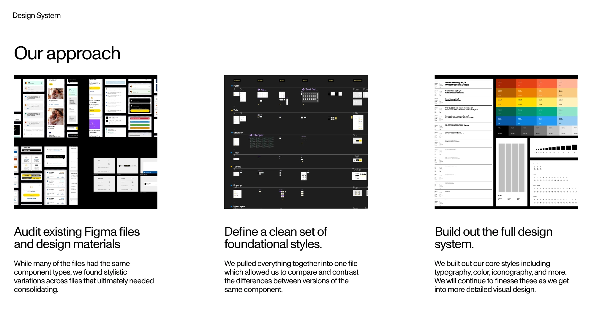
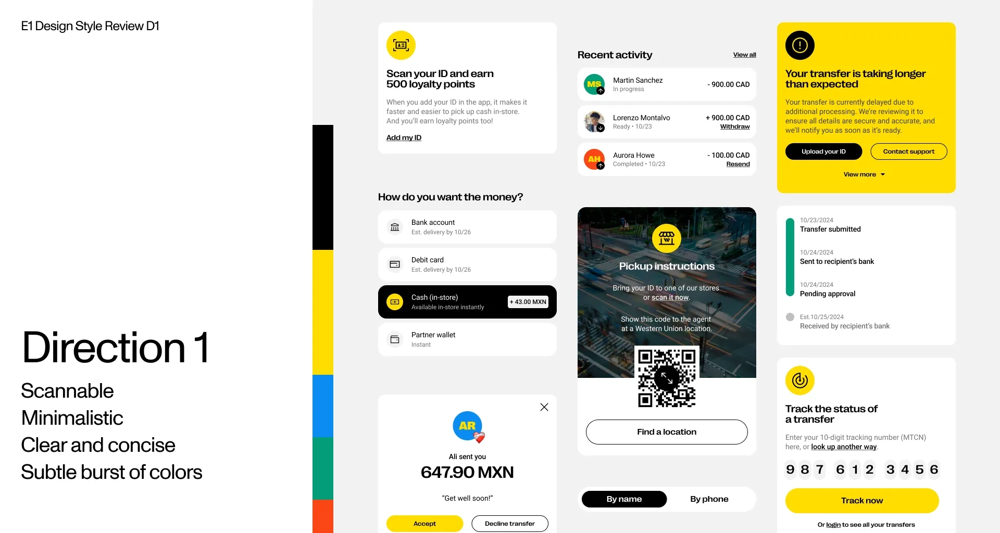

Unified 5 fragmented products into one platform — the biggest redesign in Western Union’s 150-year history.
At Western Union, I led design for E1 — consolidating five separate apps into a single unified, account-based platform. I managed an 11-person design team working alongside 40+ engineers across iOS, Android, and web, under strict KYC/AML regulatory constraints across six markets.
WU ran five separate apps for the same user. Each had its own stack, team, and experience. The business model shift to account-based required one platform — not five.
Before a single production screen was designed, I made the case to leadership for a dedicated design system effort. The argument: without a shared foundation, 142 screens across 5 platforms would ship at 142 different quality levels. The Nexus Design System was the insurance policy for scale.
| Platform | Colour | Typography | Spacing | Components | Motion | Accessibility |
|---|---|---|---|---|---|---|
| iOS | ✓ | ✓ | ✓ | ✓ | ✓ | ✓ |
| Android | ✓ | ✓ | ✓ | ✓ | ✓ | ✓ |
| Web | ✓ | ✓ | ✓ | ✓ | ✓ | ✓ |

The Nexus Design System — a shared foundation of components, tokens, and standards that unified the visual language across iOS, Android, and Web.
Four design directions were explored and presented to leadership, each resolving the same core screen with a different visual language and rationale. Direction 01 received the most votes and aligned with the core aesthetics of Western Union — it went through a second round of critique before becoming the foundation of E1’s visual language.
Balanced WU’s brand warmth with a modern, fintech-grade product language. High contrast ratios met accessibility compliance across all markets. Clear visual hierarchy reduced cognitive load for low-literacy users. Enough visual elevation to compete with challenger fintech products without abandoning the trust signals WU users relied on.

Direction 1 — Scannable, minimalistic, clear and concise with a subtle burst of colour. Selected by leadership as the foundation for E1’s visual language.
Before launch, I introduced a structured UX evaluation process — a quality gate that sat between “design approved” and “engineering shipped”. This was not a visual QA pass. It was a systematic review of the complete application against the original experience intent.
| Metric | Result | Business meaning |
|---|---|---|
| Engineering rework | ~40% reduction | Faster delivery, fewer sprint overruns |
| Journey drop-off | ~5% reduction | Measurable conversion improvement across key flows |
| Design-to-handoff cycle | ~20% faster | More engineering throughput per sprint |
| Production quality | 142+ screens | Consistent standard achieved at scale |